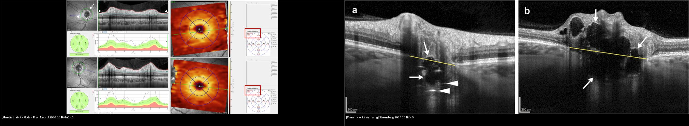
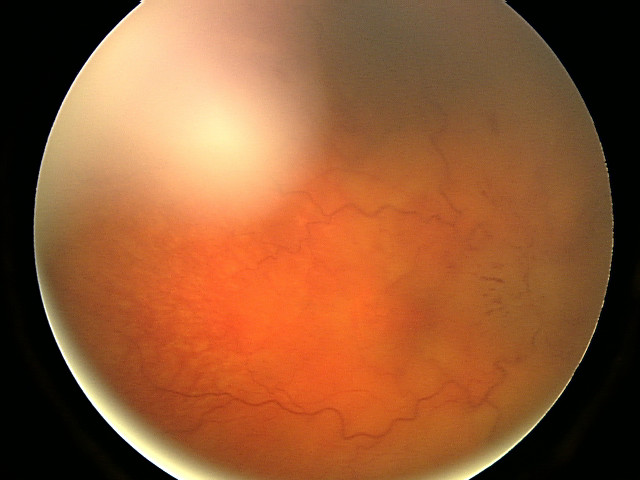
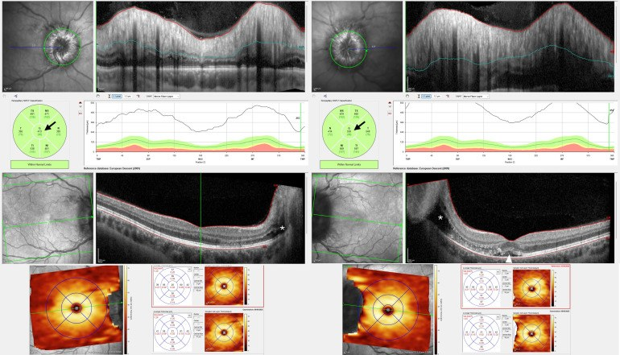
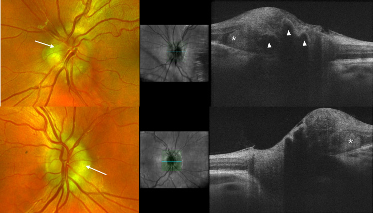

433 — Phù đĩa thị vs drusen đĩa: Frisén, IIH & PHOMS / Papilledema vs disc drusen
Tags: pattern:phu-dia-thi vung:dia-thi score:Frisen protocol:OCT-dia-thi
Mức chắc chắn (certainty): tổng hợp y văn (literature synthesis) — nhóm tự biên từ 2 nghiên cứu mở (Pract Neurol 2026 CC BY-NC 4.0 + Neuro-Ophthalmology 2024 CC BY 4.0) và ảnh CC BY Wikimedia, chưa gắn ca nguyên văn đơn lẻ.
1. Tổng quan — phù thật do áp lực, giả phù do canxi + số RNFL nằm lòng
- Papilledema (phù đĩa thị): phù đĩa do tăng áp lực nội sọ (ICP) — theo định nghĩa luôn 2 bên (có thể không đối xứng), thị lực trung tâm còn tốt sớm (chỉ giãn điểm mù). TẠI SAO áp lực sọ làm phù mắt: áp lực dịch não tủy truyền theo bao sợi thị vào nhãn cầu, ứ trệ vận chuyển sợi trục (axoplasmic stasis) → sợi thần kinh phù.
- Drusen đĩa (optic disc drusen, ODD): lắng đọng canxi đầu thần kinh thị, gặp ~2% dân số, hay gia đình (8/13 gia đình có ≥ 2 người — Steensberg 2024). TẠI SAO nhìn giống phù: drusen đội đĩa nhô lên + che lõm — nhưng không có rò rỉ, không sung huyết thật, mạch máu nét (không bị phù che).
- Số nằm lòng (Lowe 2026, Pract Neurol, OCT Heidelberg): phù nhẹ RNFL trung bình 155–168 µm; phù đe dọa thị lực 413–550 µm + dịch trong võng mạc lan từ đĩa + dịch dưới hoàng điểm — thấy 3 dấu này là mổ/chọc dịch cấp, không hẹn.
- Số IIH: chọc dịch chẩn đoán khi áp lực mở > 25 cmH2O (người lớn); điều trị acetazolamide + giảm cân (giảm ~6–10% cân nặng đã cải thiện rõ).
2. Gamut đĩa nhô cao — 4 câu hỏi trước khi chọc dịch
- Nhức đầu buổi sáng + ù tai mạch đập + ám điểm thoáng qua khi gắng sức + 2 bên: papilledema/IIH (nữ trẻ béo phì) — MRI + MRV rồi mới chọc dịch.
- Tình cờ soi thấy đĩa nhô + thị lực bình thường + gia đình có người bị: drusen — EDI-OCT tìm lõi tối + tự phát sáng (autofluorescence).
- Mờ 1 bên + đau khi liếc + màu sắc nhạt sớm: viêm thị thần kinh (bài 430) — không phải papilledema (papilledema giữ màu sắc đến muộn).
- Mù 1 bên kiểu rèm + đĩa phù nhạt + tuổi mạch máu: NAION — mất thị trường altitudinal, đĩa nhỏ crowded (khác drusen: không có lõi canxi OCT).
- Đĩa nhô + PHOMS + không rò rỉ: giả phù lành — theo dõi, đừng chọc dịch oan.
3. Bảng so sánh phân biệt (ma trận đối chiếu)
| Thực thể (entity) | Hình ảnh điển hình | Chốt vào (rule-in) | Chốt loại (rule-out) | Gợi ý xác nhận |
|---|---|---|---|---|
| Papilledema (IIH) | 2 bên + sung huyết + che mạch + RNFL dày | Triệu chứng ICP + 2 bên + rò rỉ | 1 bên + đau liếc → viêm; lõi canxi → drusen | MRI/MRV → LP > 25 cmH2O |
| Drusen đĩa | Lõi tối + viền sáng (EDI-OCT) + tự phát sáng, thị lực tốt | ODDS: lõi tối + viền sáng toàn/bán phần | RNFL dày lan tỏa + rò rỉ → phù thật | EDI-OCT + AF + thị trường |
| PHOMS | Sáng toàn bộ (không lõi tối), cạnh đĩa | Sáng đều + không viền | Lõi tối → drusen | Theo dõi (hay đi kèm papilledema/IIH) |
| Viêm TK thị | Phù 1 bên + đau liếc + mất màu sớm | Đau + RAPD + MRI ngấm TK | 2 bên + giữ màu → papilledema | (bài 430) |
| NAION | Phù nhạt 1 bên + khuyết altitudinal + đĩa nhỏ | Mù rèm + yếu tố mạch máu | Trẻ + 2 bên → IIH | ESR/CRP loại GCA nếu > 50 tuổi |

Trái: papilledema nhẹ, RNFL 155–168 µm (Lowe et al., Pract Neurol 2026 Fig. 3, CC BY-NC 4.0). Phải: drusen sâu (a) + nông (b), lõi tối + viền sáng, đường vàng = BMO (Steensberg et al., Neuro-Ophthalmology 2024 Fig. 1, CC BY 4.0). Ảnh ghép letterbox, kế thừa CC BY-NC 4.0.Quiz composite: che 2 nhãn, hỏi bên nào phải MRI + chọc dịch?
Bấm để hiện đáp án
- Trái = papilledema — RNFL dày lan tỏa do ứ trệ sợi trục → MRI/MRV loại u–huyết khối xoang rồi chọc dịch (đừng chọc khi chưa MRI!).
- Phải = drusen — lõi tối + viền sáng, không phù lan tỏa → EDI-OCT + theo dõi, không chọc dịch.
- Chung 1 mắt vẫn có thể vừa drusen vừa phù (Lowe Fig. 6) — soi lại sau điều trị mới ngã ngũ.
Drusen vs PHOMS trên OCT — cặp hay nhầm nhất khi soi không rõ
- Drusen (ODDS Consortium): lõi tối (signal-poor) + viền sáng toàn/bán phần, có thể kèm đường tăng sáng — vôi thật.
- PHOMS: khối bầu dục cạnh đĩa, sáng toàn bộ từ trong ra ngoài, không lõi tối — bó sợi phồng, không phải vôi.
- Cạm bẫy: ~50% drusen chôn sâu (buried) — soi đáy mắt không thấy, chỉ EDI-OCT mới bắt được; soi "sạch" không loại được drusen.
4. Protocol chụp + thang Frisén + xử trí IIH
- OCT đĩa thị: vòng RNFL quanh đĩa + lát cắt qua đĩa (tìm lõi tối/viền sáng) + GCL hoàng điểm (teo muộn sau phù nặng — GCL mỏng = đã mất sợi vĩnh viễn).
- Thang Frisén 0–5: 0 bình thường → 1 quầng chữ C → 2 quầng vòng → 3 che ≥ 1 đoạn mạch → 4 che toàn bộ đĩa → 5 che + nếp võng mạc–hắc mạc — ghi độ mọi lần tái khám để so đáp ứng.
- Papilledema nghi ngờ: MRI não + MRV xoang tĩnh mạch trước (loại u, não úng thủy, huyết khối xoang) → rồi mới chọc dịch đo áp lực mở; máu: loại thuốc (tetracycline, vitamin A, lithium), nội tiết.
- IIH xác định: acetazolamide + giảm cân + điều trị bệnh nền; thị trường xấu dần dù thuốc tối đa → chuyển phẫu thuật (stent xoang, fenestration bao thị, shunt).
- Tự phát sáng (autofluorescence): drusen nông sáng rực — nghiệm pháp 30 giây phân drusen/phù tại phòng khám.
flowchart TD
A[Đĩa nhô cao] --> B{Mấy bên + thị lực?}
B -->|2 bên + thị lực còn| C{Triệu chứng ICP?}
C -->|Có: nhức đầu/ù tai/ám điểm| D[Papilledema: MRI + MRV trước, rồi LP]
C -->|Không + tình cờ| E[Nghi drusen: EDI-OCT + AF]
B -->|1 bên + đau liếc/mất màu| F[Viêm TK thị - bài 430]
E --> G{Lõi tối + viền sáng?}
G -->|Có| H[Drusen: theo dõi + thị trường định kỳ]
G -->|Sáng đều không lõi| I[PHOMS: theo dõi, tìm IIH kèm]
D --> J{Áp lực mở > 25 cmH2O?}
J -->|Có| K[IIH: acetazolamide + giảm cân]
J -->|Không| L[Tìm nguyên nhân khác: thuốc, xoang, nội tiết]
5. Biến thể bình thường và cạm bẫy
- Đĩa nhỏ crowded viễn thị: nhô + sung huyết sinh lý, không lõm — OCT RNFL bình thường + không rò rỉ là chốt lành, đừng chọc dịch.
- Mất mạch đập tĩnh mạch tự nhiên: 20% dân số bình thường không có — vắng mặt không kết luận tăng ICP; nhưng đang có mà mất đi mới đáng lo.
- Chọc dịch trước MRI: tắc nghẽn (u) + chọc dịch = tụt kẹt — MRI/MRV luôn trước LP, không bao giờ đảo.
- Overdiagnosis IIH: dán nhãn papilledema cho đĩa crowded rồi chọc dịch + acetazolamide oan — OCT + thị trường + hỏi kỹ triệu chứng trước mọi LP.
- GCL mỏng sau phù nặng: phù xẹp tưởng khỏi nhưng GCL đã teo = sợi chết vĩnh viễn — theo GCL chứ không chỉ RNFL khi đánh giá di chứng.
- Drusen + phù cùng tồn tại: drusen không miễn trừ papilledema — soi lại sau điều trị ICP, drusen còn, phù xẹp mới ngã ngũ.
6. Tự lượng giá — Blind Quiz
Ca 1 — Nữ 28 tuổi béo phì, nhức đầu sáng + ù tai. Đáy mắt 2 bên như này, Frisén mấy?

- Hỏi: đĩa sung huyết + che mạch mấy bên? Frisén mấy? Việc cấm kỵ trước chọc dịch?
Bấm để hiện đáp án (findings + chẩn đoán)
- Dấu hiệu (findings): đĩa phù nề sung huyết 2 bên, bờ mờ, che mạch (ảnh gốc chất lượng hạn chế nhưng phù rõ).
- Chẩn đoán (diagnosis): papilledema nặng (Frisén 4–5) trong bệnh cảnh nghi IIH — vì 2 bên + triệu chứng ICP ở nữ trẻ béo phì.
- Cấm kỵ: chọc dịch trước MRI/MRV — phải loại u + huyết khối xoang trước, rồi LP đo áp lực mở (> 25 cmH2O chẩn đoán IIH).
- Nguồn ảnh: Bansal et al., CC BY 2.0 via Wikimedia Commons.
Ca 2 — OCT đĩa thị RNFL 550 µm + dịch lan vào hoàng điểm. Mức nào, xử trí giờ nào?

- Hỏi: RNFL bao nhiêu? 3 dấu đe dọa thị lực? Có được hẹn tái khám thường không?
Bấm để hiện đáp án (findings + chẩn đoán)
- Dấu hiệu (findings): RNFL trung bình 413–550 µm + dịch trong võng mạc lan từ đĩa + dịch dưới hoàng điểm, GCL còn nguyên (chưa teo — vẫn cứu được!).
- Chẩn đoán (diagnosis): papilledema đe dọa thị lực (sight-threatening) — vì đủ bộ 3 dấu nặng.
- Xử trí: cấp cứu ICP (thuốc tối đa ± phẫu thuật), không hẹn thường — GCL còn nguyên nghĩa là can thiệp kịp vẫn giữ được thị lực.
- Nguồn ảnh: Lowe et al., Pract Neurol 2026 Fig. 4 (PMC13479234), CC BY-NC 4.0 (dùng nguyên bản).
Ca 3 — Thiếu niên soi tình cờ đĩa nhô, thị lực 10/10. OCT này là phù hay drusen?

- Hỏi: mũi tên trắng vs đầu mũi tên trắng khác nhau gì? Có cần chọc dịch không?
Bấm để hiện đáp án (findings + chẩn đoán)
- Dấu hiệu (findings): PHOMS sáng toàn bộ (mũi tên) + drusen lõi tối–viền sáng (đầu mũi tên) — thị lực bình thường, không rò rỉ.
- Chẩn đoán (diagnosis): giả phù do drusen + PHOMS (pseudopapilledema) — vì đủ tiêu chuẩn ODDS, không triệu chứng ICP.
- Xử trí: không chọc dịch — EDI-OCT + tự phát sáng + thị trường định kỳ (drusen là yếu tố nguy cơ NAION về sau).
- Nguồn ảnh: Lowe et al., Pract Neurol 2026 Fig. 5 (PMC13479234), CC BY-NC 4.0 (dùng nguyên bản).
Bài liên quan chéo
- 400 – Tổng quan Mắt
- 430 – Đường thị giác (viêm vs NAION vs phù)
- 431 – U TK thị (chèn ép gây phù đĩa)
- 432 – Vùng yên (u yên–tăng ICP)
- 442 – Glaucoma (RNFL: dày trong phù vs mỏng trong glaucoma)
Ảnh
433_papilledema-nang_Fundus_Wikimedia-Bansal-CCBY20.jpg— Bansal et al., CC BY 2.0 via Wikimedia Commons.433_papilledema-nhe_OCT_PMC13479234-Fig3-CCBYNC40.jpg,433_papilledema-nang_OCT_PMC13479234-Fig4-CCBYNC40.jpg,433_drusen-PHOMS_OCT_PMC13479234-Fig5-CCBYNC40.jpg— Lowe et al., Pract Neurol 2026 (PMCID: PMC13479234), CC BY-NC 4.0 (dùng nguyên bản, phi thương mại).433_drusen-ODD_OCT_PMC12409904-Fig1-CCBY.jpg— Steensberg et al., Neuro-Ophthalmology 2024 (PMCID: PMC12409904), CC BY 4.0.- Chi tiết giấy phép từng ảnh trong
images/CREDITS.md. AuntMinnie: chỉ dẫn link, không tải.
Không dùng để chẩn đoán độc lập khi chưa có người hướng dẫn.